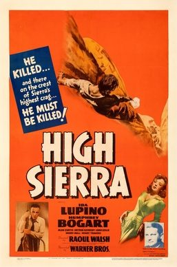

THE STANFORD THEATRE
Now Showing
·
Upcoming
·
Past
·
Search
November 14 - December 24, 2008
Humphrey Bogart Also, Holiday Favorites
7 bills
November 14 - 20
Casablanca (1942)
102 min
Beat the Devil (1953)
89 min
November 21 - 27
The Big Sleep (1946)
114 min
In a Lonely Place (1950)
94 min
November 28 - December 4
To Have and Have Not (1944)
96 min
The Maltese Falcon (1941)
101 min
December 5 - 11
Treasure of the Sierra Madre (1948)
126 min

High Sierra (1941)
100 min
December 12 - 18
The African Queen (1951)
105 min
Sabrina (1954)
113 min
December 19 - 23
The Shop Around the Corner (1940)
99 min
The Wizard of Oz (1939)
102 min
December 24
It's a Wonderful Life (1946)
125 min
Archived calendar page
·
Original
·
All past festivals